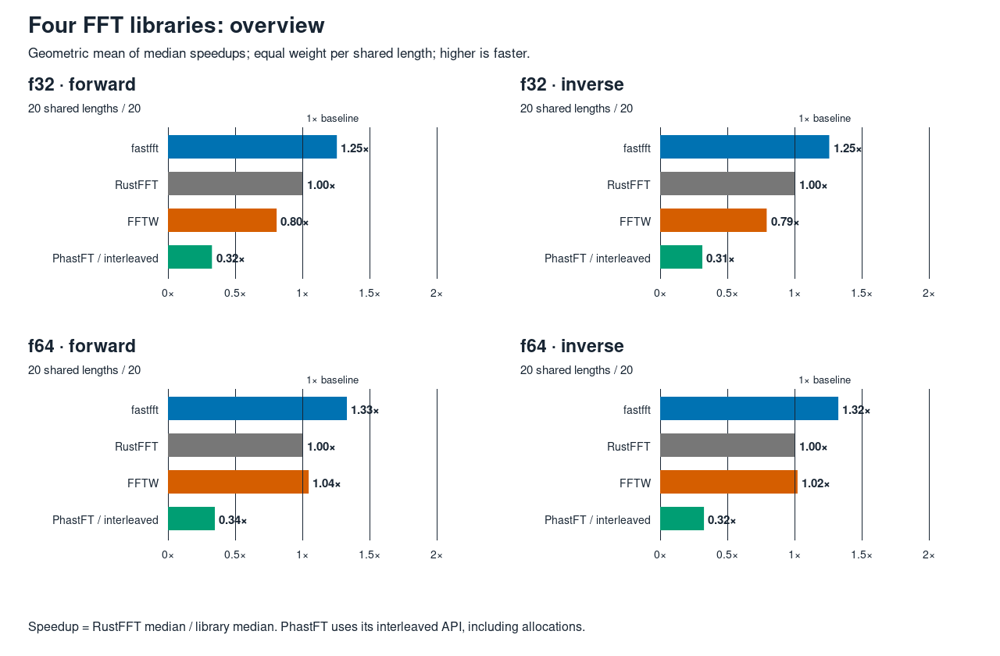
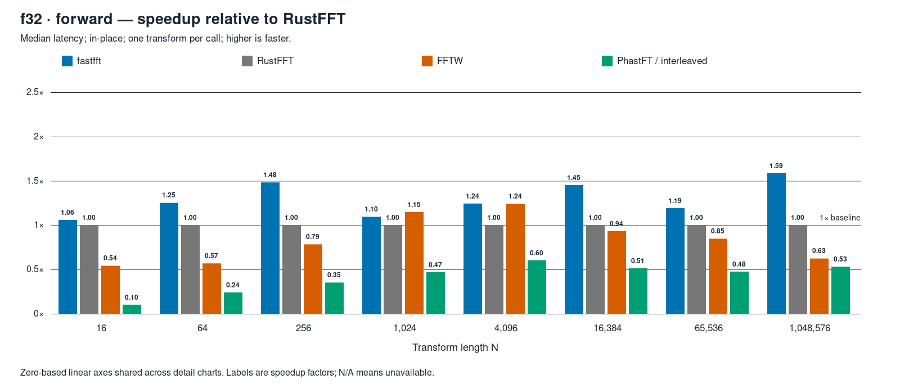
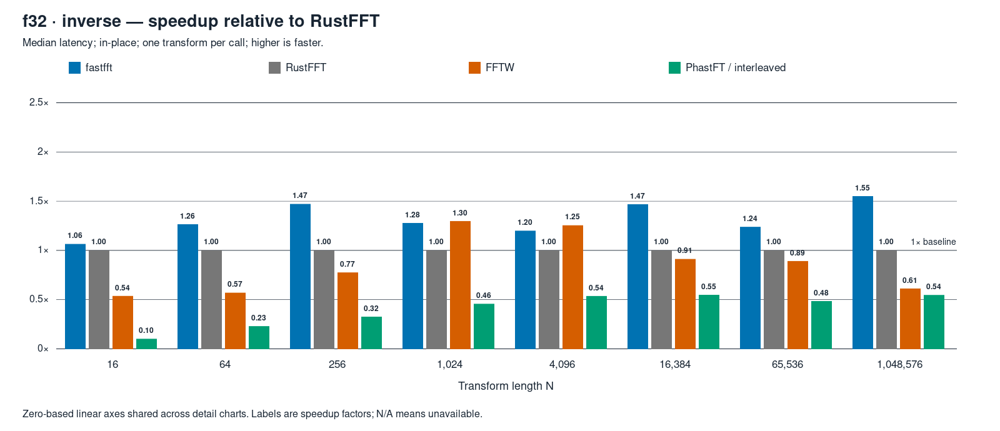
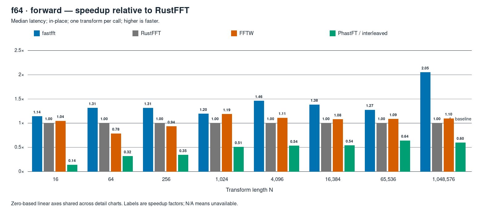
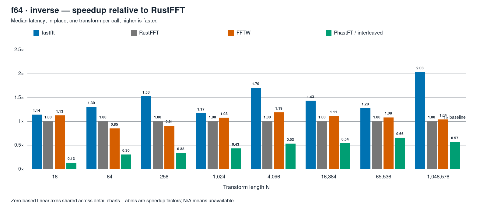

2026-10-02 · mini-ryzen · AMD Ryzen 7 7840HS
Four FFT libraries.
One pinned core.
fastfft’s geometric-mean median speedup is 1.25×–1.33× relative to RustFFT across these four groups.
Forward + inverse · f32 + f64 · N = 2 through 1,048,576 · in-place · one transform per call
The shared-cell overview
320/320 verified and timedSpeedup = RustFFT median ÷ library median. Above 1× is faster. Each bar is a geometric mean with equal weight per length, using only cells shared by all four libraries.
Scroll the charts horizontally, or open the full-size image.



| Library | f32 forward | f32 inverse | f64 forward | f64 inverse |
|---|---|---|---|---|
| fastfft | 1.253× | 1.254× | 1.327× | 1.321× |
| RustFFT | 1.000× | 1.000× | 1.000× | 1.000× |
| FFTW | 0.804× | 0.788× | 1.043× | 1.017× |
| PhastFT / interleaved | 0.323× | 0.308× | 0.344× | 0.321× |
Explore a transform group
Eight charted lengths · every length in the tablesChoose a precision and direction. All detail charts use the same zero-based linear scale.
f32 forward
20 shared lengths / 20


Absolute median latencies · all 20 lengths
Nanoseconds per transform. N/A marks an unavailable measurement.
| N | fastfft | RustFFT | FFTW | PhastFT interleaved |
|---|---|---|---|---|
| 2 | 2.651 | 2.905 | 3.752 | 34.991 |
| 4 | 3.596 | 4.293 | 4.635 | 44.181 |
| 8 | 7.244 | 7.892 | 7.881 | 58.133 |
| 16 | 8.328 | 8.842 | 16.280 | 84.976 |
| 32 | 11.865 | 12.678 | 28.857 | 113.621 |
| 64 | 17.249 | 21.618 | 37.928 | 89.766 |
| 128 | 38.179 | 50.949 | 72.709 | 156.315 |
| 256 | 75.199 | 111.573 | 142.107 | 315.466 |
| 512 | 227.417 | 271.344 | 263.676 | 664.600 |
| 1,024 | 585.378 | 641.213 | 558.360 | 1,356.892 |
| 2,048 | 1,114.386 | 1,418.938 | 1,130.279 | 2,784.722 |
| 4,096 | 2,917.778 | 3,630.200 | 2,925.529 | 6,020.222 |
| 8,192 | 5,600.556 | 7,007.125 | 8,344.167 | 13,179.750 |
| 16,384 | 11,321.400 | 16,451.000 | 17,589.833 | 32,025.500 |
| 32,768 | 26,515.500 | 39,610.000 | 36,919.750 | 72,457.000 |
| 65,536 | 70,153.000 | 83,669.000 | 98,606.000 | 175,783.000 |
| 131,072 | 148,702.000 | 186,011.000 | 217,091.000 | 298,194.000 |
| 262,144 | 318,948.500 | 425,595.000 | 499,735.000 | 692,851.000 |
| 524,288 | 719,671.000 | 911,734.500 | 2,300,843.000 | 1,809,853.500 |
| 1,048,576 | 1,970,903.500 | 3,130,382.000 | 5,004,963.000 | 5,889,496.000 |
f32 inverse
20 shared lengths / 20


Absolute median latencies · all 20 lengths
Nanoseconds per transform. N/A marks an unavailable measurement.
| N | fastfft | RustFFT | FFTW | PhastFT interleaved |
|---|---|---|---|---|
| 2 | 2.649 | 2.901 | 6.315 | 39.943 |
| 4 | 3.596 | 4.289 | 4.766 | 45.806 |
| 8 | 7.243 | 7.894 | 7.784 | 60.267 |
| 16 | 8.312 | 8.841 | 16.496 | 88.238 |
| 32 | 11.914 | 12.724 | 27.176 | 117.039 |
| 64 | 17.174 | 21.687 | 38.131 | 95.119 |
| 128 | 38.174 | 48.072 | 61.381 | 164.045 |
| 256 | 74.946 | 110.182 | 142.424 | 339.489 |
| 512 | 227.180 | 252.256 | 268.201 | 797.161 |
| 1,024 | 509.255 | 650.099 | 501.561 | 1,426.757 |
| 2,048 | 1,146.116 | 1,420.400 | 1,207.048 | 2,954.500 |
| 4,096 | 2,956.176 | 3,541.700 | 2,825.389 | 6,618.750 |
| 8,192 | 5,838.778 | 7,930.714 | 8,355.833 | 13,806.250 |
| 16,384 | 11,259.200 | 16,506.250 | 18,114.333 | 30,247.500 |
| 32,768 | 26,705.500 | 38,478.000 | 37,676.000 | 75,823.000 |
| 65,536 | 69,792.000 | 86,323.000 | 96,973.000 | 178,808.000 |
| 131,072 | 148,992.000 | 186,352.000 | 218,573.000 | 321,367.000 |
| 262,144 | 322,580.500 | 418,697.000 | 511,132.000 | 685,667.000 |
| 524,288 | 704,242.000 | 915,983.000 | 2,327,002.000 | 1,740,161.000 |
| 1,048,576 | 1,979,956.000 | 3,065,850.000 | 5,015,698.500 | 5,625,837.500 |
f64 forward
20 shared lengths / 20


Absolute median latencies · all 20 lengths
Nanoseconds per transform. N/A marks an unavailable measurement.
| N | fastfft | RustFFT | FFTW | PhastFT interleaved |
|---|---|---|---|---|
| 2 | 2.583 | 2.591 | 2.846 | 35.170 |
| 4 | 3.684 | 3.818 | 3.655 | 50.690 |
| 8 | 6.685 | 7.135 | 5.684 | 59.995 |
| 16 | 9.107 | 10.396 | 9.949 | 75.084 |
| 32 | 14.204 | 27.293 | 22.314 | 130.985 |
| 64 | 30.668 | 40.301 | 51.369 | 126.877 |
| 128 | 64.378 | 89.112 | 133.192 | 255.161 |
| 256 | 152.222 | 199.849 | 213.737 | 578.884 |
| 512 | 436.657 | 508.607 | 422.946 | 1,089.341 |
| 1,024 | 1,042.617 | 1,246.125 | 1,048.867 | 2,453.150 |
| 2,048 | 2,736.211 | 3,083.938 | 2,646.053 | 5,838.500 |
| 4,096 | 4,742.545 | 6,933.167 | 6,255.625 | 12,954.500 |
| 8,192 | 11,143.200 | 15,366.750 | 14,025.375 | 27,256.500 |
| 16,384 | 25,017.500 | 34,550.500 | 31,975.500 | 63,861.000 |
| 32,768 | 52,459.000 | 77,156.000 | 75,433.000 | 145,982.000 |
| 65,536 | 137,901.000 | 175,532.000 | 161,726.000 | 274,754.500 |
| 131,072 | 296,941.500 | 389,522.000 | 363,668.000 | 646,448.000 |
| 262,144 | 646,207.500 | 894,833.000 | 847,643.000 | 1,653,142.500 |
| 524,288 | 1,832,351.500 | 2,954,243.500 | 2,877,814.000 | 5,527,096.000 |
| 1,048,576 | 4,159,985.000 | 8,525,793.500 | 7,784,296.000 | 14,272,073.500 |
f64 inverse
20 shared lengths / 20


Absolute median latencies · all 20 lengths
Nanoseconds per transform. N/A marks an unavailable measurement.
| N | fastfft | RustFFT | FFTW | PhastFT interleaved |
|---|---|---|---|---|
| 2 | 2.584 | 2.585 | 2.845 | 36.964 |
| 4 | 3.686 | 3.816 | 3.665 | 48.530 |
| 8 | 6.683 | 7.132 | 5.667 | 62.175 |
| 16 | 9.122 | 10.400 | 9.241 | 77.669 |
| 32 | 14.221 | 17.491 | 23.022 | 135.114 |
| 64 | 30.697 | 39.853 | 46.873 | 130.929 |
| 128 | 64.409 | 89.041 | 128.627 | 270.339 |
| 256 | 131.713 | 200.935 | 221.950 | 602.819 |
| 512 | 437.991 | 506.348 | 462.953 | 1,466.767 |
| 1,024 | 1,066.064 | 1,245.100 | 1,158.021 | 2,872.056 |
| 2,048 | 2,720.947 | 3,002.765 | 2,825.333 | 6,281.875 |
| 4,096 | 4,616.000 | 7,837.375 | 6,598.750 | 14,712.750 |
| 8,192 | 10,988.800 | 15,101.000 | 14,257.000 | 28,842.250 |
| 16,384 | 24,316.000 | 34,785.500 | 31,314.500 | 64,251.000 |
| 32,768 | 52,028.000 | 78,068.000 | 75,332.000 | 157,719.000 |
| 65,536 | 137,219.000 | 175,292.000 | 162,006.000 | 267,516.000 |
| 131,072 | 297,012.000 | 392,312.000 | 368,888.000 | 650,586.000 |
| 262,144 | 642,485.000 | 953,033.000 | 843,426.000 | 1,638,028.000 |
| 524,288 | 1,842,425.000 | 2,998,663.000 | 2,838,429.000 | 5,506,687.000 |
| 1,048,576 | 4,206,918.500 | 8,546,257.000 | 8,222,144.000 | 15,049,590.000 |
How this run was measured
333.2 secondsAll 320 available measurements passed double-double reference verification. Maximum CPU drift was 1.42%; there were no child failures, drift flags or aborted cells.
Measurement protocol
- 80 cells: 20 power-of-two lengths × two precisions × two directions.
- Sequential children pinned to CPU 2. 64-byte-aligned buffers; zero-filled timing input; one transform per call.
- 200 ms warm-up per library, seven rotating rounds, at least 100 ms per library per round. Batches target at least 50 µs.
- Median of timed batch means per transform. Planning stays outside timing.
- Before timing: three consecutive 10-second samples with total CPU, CPU 2 and CPU 10 each ≤2%, then a passing environment check.
- Five control measurements track drift; each control merges three child processes. The dependent-add proxy measures relative drift, not calibrated GHz.
What the API timings include
- fastfft and RustFFT reuse planners and preallocated scratch. FFTW reuses its measured plans and host wisdom.
- PhastFT uses its interleaved API with a reused planner and parallelism disabled. Temporary real/imaginary vectors, recombination, copy-back and deallocation are timed.
- PhastFT inverse includes 1/N normalization. The other libraries return unnormalized inverse results; verification rescales PhastFT outside timing.
One run on one CPU does not establish cross-machine results or run-to-run uncertainty. Small-N call overhead and address placement can affect ratios.
Machine, library versions and build
- CPU
- AMD Ryzen 7 7840HS w/ Radeon 780M Graphics
- Core and SMT
- CPU 2; siblings 2,10; SMT 1
- CPU policy
- Governor performance; EPP performance; boost 1
- fastfft
- 0.1.0; default Estimate planner; detected AVX-512 tier; observed kernels: AVX2, AVX-512, AVX-512 YMM (selected by length and precision)
- RustFFT
- 6.4.1; automatic SIMD planner
- FFTW
- fftw-3.3.11-sse2-avx-avx2-avx2_128-avx512; existing static build; FFTW_MEASURE
- PhastFT
- 0.4.1; complex-nums interleaved; parallel disabled
- Rust compiler
- rustc 1.95.0 (59807616e 2026-04-14); binary: rustc; commit-hash: 59807616e1fa2540724bfbac14d7976d7e4a3860; commit-date: 2026-04-14; host: x86_64-unknown-linux-gnu; release: 1.95.0; LLVM version: 22.1.2
- Build
- Arena profile; fat LTO; one codegen unit; -C llvm-args=-align-all-functions=6; target-cpu=native: False
- Source revision
a4d8aae88738db827a9a259f23077b72b591481c; dirty status True. Benchmark source and Cargo.lock were unchanged; report files were added locally.
FFTW configure lines
double: CFLAGS='-O3 -fPIC -std=gnu17' ./configure --enable-static --disable-shared --disable-fortran --disable-doc --enable-sse2 --enable-avx --enable-avx2 --enable-avx512 --enable-fma single: CFLAGS='-O3 -fPIC -std=gnu17' ./configure --enable-static --disable-shared --disable-fortran --disable-doc --enable-sse2 --enable-avx --enable-avx2 --enable-avx512 --enable-fma --enable-float
Command and complete method
RUSTFLAGS="-C llvm-args=-align-all-functions=6" \ cargo xtask arena run --suite pow2 --profile full \ --libs fastfft,rustfft,fftw,phastft/interleaved \ --max-n 1048576 --filter place=ip --core 2 \ --label four-library-comparison
Read the complete Markdown report for all absolute-latency tables and methodology.